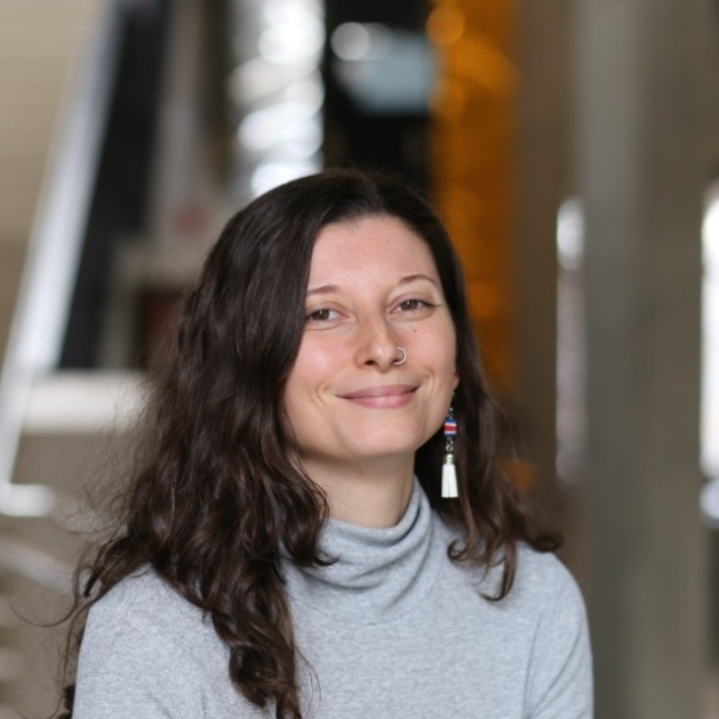

July 2026
New position as an assistant professor at PUC
I am excited to join the faculty of the Institute of Astrophysics at PUC Chile, where I look forward to building a group focused on galaxy assembly in the nearby universe.

Astrophysicist
I study how the hierarchical assembly of galaxies impacts their structure, star formation histories, and chemical evolution using detailed observations of the nearby universe.
I am an Assistant Professor at the Institute of Astrophysics, Pontificia Universidad Católica (PUC) de Chile.
My work combines ground- and space-based observations of resolved stellar populations in the nearby universe with statistical modeling to explore how interactions between galaxies shape their evolution across cosmic time, from the smallest dwarf galaxies to massive disk galaxies like Andromeda (M31).
Before coming to PUC, I was a postdoctoral fellow at Space Telescope Science Institute (STScI) and a Carnegie-Princeton Fellow at Princeton University and the Carnegie Observatories. I received my PhD in Astrophysics from Caltech and my B.S. in Physics from the University of California, San Diego (UCSD).
A little more about me: I am a Costa Rican-Argentinian-American astronomer living in Santiago, Chile, from San Diego, California. In my free time, I enjoy running, hiking, cooking, and reading.
I am actively seeking students and postdocs to join my group. See here for opportunities!
Research group
July 2026
I am excited to join the faculty of the Institute of Astrophysics at PUC Chile, where I look forward to building a group focused on galaxy assembly in the nearby universe.
June 2026
I am happy to be part of the team led by Karoline Gilbert (STScI) awarded time on Roman for a legacy survey of Andromeda and Triangulum , where I lead the simulations working group.
May 2026
My new analysis quantifies how interaction-driven starbursts in the L/SMC impacts their star formation histories and chemical abundaces, with broader implications for mutually interacting dwarf galaxies.